Runesmith
Tank and support; Varnhalt's fire.
The forge-schools that preserve Varnhalt's runes. Only they can still read his seals, and only they can carve a ward that holds.
Spellbook
Role: Tank / Support · Resource: Mana + Rune Charges (runes engraved on armour and weapons give passive bonuses) · Races: Dwarves, Goblins, Forged, Thornkin, Beast-Touched, Tide-Born
Engraves magic runes into armour and weapons. Creates protective shields of stone and fire and strengthens allies.
In Orvessa: Varnhalt was the god of the forge, and he taught the first runesmiths with his own hands. Many of his runes still hold doors shut in the Deep, and runesmiths are the only ones who can read, repair or break them.
| Level | Spell | Effect |
|---|---|---|
| 1 | Rune Strike | Basic attack |
| 4 | Stone Skin | A rune that absorbs damage |
| 8 | Fire Glyph | A fire trap on the ground |
| 10 | Rune of Warding | Protects an ally |
| 14 | Anvil Strike | Stun |
| 18 | Empower Weapon | Weapon buff |
| 22 | Frost Rune | Slows |
| 26 | Rune Chain | Links targets |
| 32 | Forgeheart | Heal + buff |
| 38 | Runic Burst | AoE explosion |
| 46 | Rune Prison | Imprisons a target |
| 54 | Ancient Inscription | Permanent buff on the party |
| 60 | World Rune | Ultimate: a huge zone that protects allies and damages enemies |
Talent trees
- Rune Warden (tank): Stone Rune Mastery, Ironclad, Shield of Fire, Glyph Resilience. Capstone: Mountain's Might.
- Forgebinder (support): Rune Efficiency, Empower Mastery, Banner of Runes, Rune Link. Capstone: Artisan's Blessing.
- Stormscribe (offence): Lightning Rune, Overcharged Glyph, Arc Detonation, Runic Storm. Capstone: Thunder Script.
Gallery

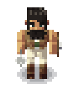

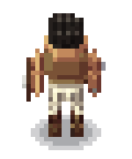

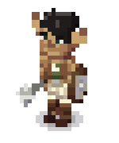

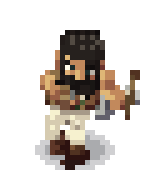

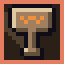

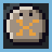

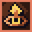

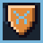

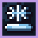

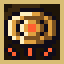

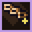

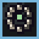